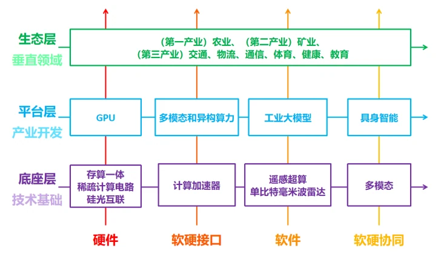
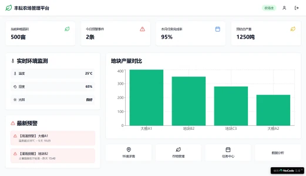
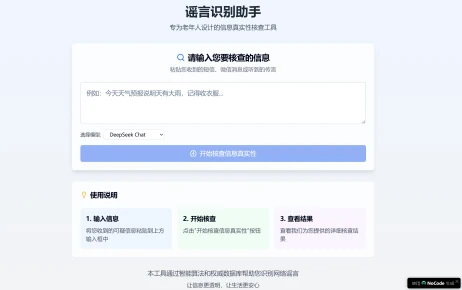
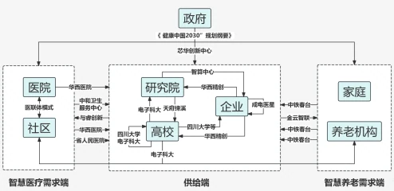
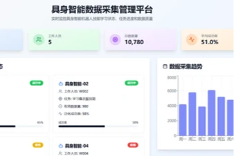

AI赋能社会治理现代化：多领域实践与创新路径研究
2025年清华大学学生暑假社会实践品牌项目总结报告
AI赋能社会治理现代化：多领域实践与创新路径研究
内容摘要：在“人工智能+”行动深入实施的背景下，本研究针对国内AI赋能社会治理“试点好，推广难”的现状，搭建“底座层-平台层-生态层/硬件-软硬接口-软件-软硬协同”三层四节框架，系统剖析AI技术在社会治理中的实践现状与困境。研究揭示国内技术赋能形成了良好的“AI技术-AI产业-AI应用”的正向激励链条，但在AI治理规范方面尚存问题。在此基础上为“推广难”问题的解决探索方向。
关键词：智能治理 技术赋能 跨域协同 治理规范 三层四节框架
近年来，人工智能正与经济社会各行业各领域广泛深度融合，重塑着人类生产生活范式。2025年，国务院印发《关于深入实施“人工智能+”行动的意见》（以下简称《意见》）。《意见》指出了人工智能与6大重点领域广泛深度融合的发展目标，并强调“强化基础支撑能力”，从多方面支持人工智能的发展需要。本研究基于对北京、上海、深圳、杭州、武汉、成都、无锡及大连等创新枢纽的深度调研，并结合对澳大利亚、英国AI赋能社会治理情况的研究，发现当前我国AI赋能社会治理存在“试点好，推广难”的现象：在上海、武汉等试点城市，车路协同虽然有效赋能了自动驾驶、智慧城市的发展，但目前尚停留在小范围封闭场景，应用范围难以扩展。而以英国的“安全先行、伦理前置”原则性框架为代表的“先治理，再发展”的思路为我国以“治理AI”赋能“AI治理”提供了参考案例。此外，对于实践中的痛点问题，本次研究希望通过学生AI科创的方式提供解决思路。
本研究的创新之处在于构建起“底座层-平台层-生态层/硬件-软硬接口-软件-软硬协同”三层四节分析框架。“底座层”“平台层”“生态层”依次对应于人工智能的技术基础端、产业开发端与垂类应用端；“四节”则是指产业链的硬件、软硬接口、软件、软硬协同四个环节。本研究既关注“引进来”，参考国际经验探索国内现存困境的解决路径，为“人工智能+”国家战略提供实践注脚，也关注“走出去”，通过提炼中国特色的智能治理范式，为发展中国家破解技术赋能与治理转型的二元困境提供新思路。后续章节将在“底座层-平台层-生态层/硬件-软硬接口-软件-软硬协同”三层四节分析框架之下，全栈式分析当前我国人工智能发展应用现状，揭示技术赋能社会治理的内在逻辑与创新路径。

图1 三层四节分析框架
一、重点领域实践分析
在前往各地进行理论与实地调研时，我们发现，对于三层四节分析框架中的每一个单元，在现实中都可以找到鲜活的案例作为研究切入点。接下来将针对这些真实案例进行分析。
（一）底座层：技术与硬件支撑
底座层的研究对象为支持AI产业链所需的技术基础，其主体主要为高校和研究所，各环节发展现状如下：
1．硬件：GPU底层元件
清华大学电子系与集成电路学院聚焦GPU底层硬件突破，研发多项核心技术夯实芯片硬件根基。开发忆阻器存算一体阵列元件，采用Pd/TiOx/ZnO/TiN多层异质结构构建1kb阵列模块，可嵌入GPU计算核心实现存储单元内直接乘加运算，消除权重参数搬运开销，显著提升能效比；打造渐进式稀疏计算单元，大幅突破存储墙瓶颈，实现相似性感知计算；研发硅光互连集成电路，基于“太极”光芯片技术构建三维堆叠结构，实现GPU多核心间TB/s级片上通信。
软硬接口：计算加速器
南京大学智能感知与通信实验室（ISCL）围绕底座层硬件（科学计算加速器、AIoT传感器），研发场景化软件算法体系，通过算法与硬件的深度协同，释放硬件性能，拓展应用边界。AI4EDA智能优化算法构建“电路参数-性能指标”映射模型，大幅提升IC设计效率，降低对资深工程师经验的过度依赖；轻量化AI模型压缩技术，开发模型剪枝、量化工具链，可将云端大模型压缩至边缘硬件可承载的规模，满足AIoT终端的本地计算需求，支撑AIoT硬件的高效运行。
软件：遥感、雷达技术
无锡遥感技术的底座层软件以国家超级计算无锡中心“神威・太湖之光”超算硬件为核心支撑，围绕“数据高效处理-场景精准适配”构建全链路软件体系，聚焦城市治理场景需求，解决传统遥感数据处理效率低、应用落地难的问题，支撑无锡城市治理中的遥感技术落地应用。
深圳雷达技术聚焦低空经济场景核心需求，大疆公司推出的Matrice 350 RTK产品同时集成了激光雷达与毫米波雷达并达到良好的兼容效果，成功结合两者优势，但仍然存在成本高，难以推广的问题。
软硬协同：具身智能多模态融合框架
清华大学电子系与自动化系围绕具身智能“感知-决策-执行”全链路需求，研发多项底层核心技术。在感知层面，构建Tactile-VLA多模态融合框架，首次将触觉感知作为原生模态引入视觉-语言-动作模型，通过多模态编码器与Transformer backbone网络实现视觉、语言、触觉和本体感觉的token级深度融合，解决位置与力控制的协同难题；在控制层面，开发高动态运动控制技术，通过硬件加速的控制算法模块实现机器人关节多模式精准控制；同时优化力控感知技术，提升感知精度与响应速度，适配3C产品装配、柔性物体操作等产业场景。
平台层：产业与技术转化
平台层的研究对象为AI产业链中各上下游产业开发现状，也即底座层技术的初步集成封装，其主体主要为AI相关企业，各环节发展现状如下：
沐曦GPU
沐曦在GPU研发中不仅聚焦高性能，更高度重视产品的易用性与生态兼容性。其产品均基于沐曦完全自主研发的核心GPU IP，具备自主指令集和架构，并搭载兼容主流GPU生态的软件栈（MXMACA），兼具能效与通用性优势，可为客户提供软硬件一体化的全栈生态解决方案，成为在“双碳”目标下支撑数字经济建设与产业数字化、智能化转型的关键算力基础。
无问芯穹异构算力
无问芯穹致力于以软硬件协同核心技术构建“异构云×新终端”一体化产品体系，将算力服务从单一资源交易升级为全产业生态引擎。目前公司的Infini-AI云已打通十余种国产以及AMD和NVIDIA芯片，千卡混训利用率97.6%，训练时间缩短30%。Megrez-3B-Omni端侧模型在JetsonOrinNano推理延迟50ms、功耗<15W。猎聘AI简历优化日均百万次调用，蜂鸟商品图生成成本降70%。
雪浪工业大模型
基于通用工业大模型，雪浪云与海智在线共同研发“图零大模型”，该大模型在2025年7月的世界人工智能大会（WAIC）上引起广泛关注；面向航空航天领域的大飞机装配等复杂场景，雪浪云开发了工艺生成智能体；在集成电路设计领域，雪浪云依托其工业大模型平台和数字底座“雪浪OS”，通过多模态数据融合、知识抽取与智能推理技术，解决行业在工艺优化、知识管理、设计辅助等环节的痛点，推动传统制造业向AI级智能化生产转型。
上海具身智能产业
上海具身智能产业呈现多元发展趋势。钛虎机器人以其轻量化关节模组为核心竞争力产品；非夕机器人Rizon拂晓系列机械臂产品专研精准力控；开普勒机器人将末端重复定位精度优化至±0.02mm，赋能工业化分拣工作；TELEAI具身智能实现空海跨域功能，主要服务于国家特种战略领域；清宝机器人则专注于制作擅长人机情感交互机器人，在直播带货、文旅介绍等新兴领域均有应用。
生态层：产业数字化转型与电子信息赋能实践
生态层的研究对象为AI产业链所赋能的垂直领域，是平台层产业的应用层广泛实践，对于我国国民经济的第一、二、三产业均有涉及。本研究重点选取以下几个具有代表性的领域进行研究：
表1 各地AI生态现状、启示与对策
| 产业 分类 | 具体产业 | 地区 | 产业现状 | 启示与对策 |
| 第一产业 | 农业 | 澳大利亚 | 数字技术深度渗透，但面临前期投入高、普及难度大等挑战。 | 科技与产业深度联动，完善研产转化机制。 |
| 第二产业 | 采矿业 | 四川成都 | 封闭场景表现优秀，但面临人车混编与成本问题。 | 优化人机协同技术与数字化产业模式。 |
| 第三产业 | 通信 | 广东深圳 | 面临基础设施不足与“幽灵镜像”等问题。 | 探索“通感一体化”技术路径。 |
| 交通 | 湖北武汉 四川成都 辽宁大连 | 智慧交通试点取得成功，但尚未完全适配需求，数据共享水平也有待提升。 | 形成多元协同模式，深化数据融合，推广“政府补贴+企业共建”模式。 | |
| 物流 | 广东深圳 | 已形成场景落地与技术突破的双重成果，但安全管理与基础设施有待完善。 | 依托低空智能融合系统提升空域管理效率，推动多传感器融合技术攻关。 | |
| 体育 | 浙江杭州 | 竞技体育和智慧赛事方面成果显著，但与国外成熟市场之间仍有差距。 | 加强政策引导、推动技术创新、培养复合型人才、激发市场活力。 | |
| 健康 | 四川成都 | 已在多个子领域投入应用，但存在供需错位、老年群体接受度低等问题。 | 构建医研学产社一体化模式，以政策为引导，聚焦AI本土化。 | |
| 教育 | 北京、上海 | 应用覆盖政府、企业、学校层面，但普及度待提升。 | 完善政策，加大研发，学校改革教学并培训教师。 |
澳大利亚数字技术驱动的智慧化农业发展
澳大利亚作为农业科技创新高地，已在农业4.0时代形成“生态可持续+智能高效”的发展特色，电子信息技术深度渗透农业生产全链条，在墨尔本、布里斯班等多地构建了从高校科研到农场落地的完整数字农业体系。
在技术应用层面，澳大利亚形成了“空地一体+AI决策”的技术矩阵。AI技术深度应用于田间IoT传感监测土壤、无人机巡田与精准植保、智慧机器人规划放牧等农业生产实践。科研与产业深度联动，“实验室-田间”的转化机制形成技术落地的完整闭环。同时，澳大利亚政府还通过政策补贴与示范基地建设，推动新型通信技术覆盖偏远农区，破解网络盲区难题。
然而，澳大利亚在农业数字化转型过程中正面临自动化设备前期投入高，中小农场普及难度大，农户对数字系统操作接受度低等挑战。但整体而言，澳洲以“精准技术+协同生态”构建的数字农业模式为全球农业高效可持续发展提供了可借鉴的实践经验。
成都矿业场景智能驾驶与车路协同
成都矿业发展紧扣全省战略导向，以服务国家重要初级产品供给为核心，聚焦绿色化与智能化转型。在政策支撑下，依托装备升级、技术攻关与生态协同，成都正在构建勘查开发与生态保护协调发展的高质量矿业新格局。
以希迪智驾、华运智远等为代表的本土企业已在矿业领域形成技术突破，实现无人矿卡、“矿石流”全场景数智化解决方案等落地应用。希迪智驾针对矿山封闭场景，为矿卡加装车载芯片、激光雷达、高清摄像头等感知单元，搭建矿区内通讯链路、路端设备与云平台，研发的无人矿卡实现“装、运、卸、泊车”全流程无人化，支持手动驾驶切换与紧急介入，云平台还能实时接收数据、规划运输路线、调度车辆作业，并深度分析矿卡运行状态以提前预警故障，相关方案已在国内多个矿山商业化落地。
同时，调研发现若干矿业核心痛点，如人车混编适配难，矿山多渐进式改造，无人矿卡需与传统有人矿卡，中小企业改造意愿受预算限制等问题。结合矿业场景需求，建议从技术和模式两个层面优化。技术上为有人矿卡加装低成本定位模块实现基础位置共享，优化无人矿卡多传感器融合算法提升对未联网车辆的行为预测精度；模式上推广“分期改造+租赁合作”，降低企业初期投入成本，助力矿业场景智能驾驶规模化落地。
深圳低空通信技术支撑低空经济发展实践
低空经济作为新质生产力的重要方向，其核心应用场景之一的城市低空物流，对通信技术有着高速率、低时延、广覆盖的严苛要求，通信技术也是连接低空制造、保障体系与制度法规的关键纽带，直接影响低空经济规模化落地进程。
研究通过多主体调研，系统梳理了通信技术问题的实际影响与行业诉求。当前低空通信领域，“通感一体化”技术是重要探索方向，如中兴公司提出的相关基站可同时实现数据传输与环境感知，但实际应用中存在明显短板。一方面，基础设施不足，5G-A基站覆盖密度低，信号在高空或楼宇遮挡下易延迟，且搭建成本高，难以支撑城市全域覆盖。另一方面，面临“幽灵镜像”问题，未知遮挡物会导致感知错误，非视距路径难题尚未攻克。频谱资源竞争同样突出，无人机与地面5G网络频谱冲突加剧，部分无人机雷达抗电磁干扰能力弱，跨区域通信易出现指令延迟或中断，影响编队协同作业。此外，通信技术与其他环节存在联动制约，如基站覆盖不全导致无人机集群调度算法难以在复杂城区同步运行，气象数据采集点稀疏又限制了AI在航线优化中的作用，这些问题共同阻碍了低空通信技术的实用化发展。
武汉、成都、大连三市的交通领域数字化转型路径
随着城市治理与智能交通需求增长，车路协同技术成为提升交通管理效率、保障公共安全及推进社会治理智能化的关键支撑，武汉、成都两地是这一技术的理想试验场；作为东北亚国际航运中心、国际性综合交通枢纽城市，大连的智慧港口建设实践也极具区域代表性。
调研结果显示，以武汉黑芝麻智能、成都希迪智驾、大连辽港集团为代表的一系列企业成功将AI技术应用于智慧交通建设的实践，以北大武汉人工智能研究院为代表的高校也在AI模拟交通数据辅助决策、组件智慧交通物联网系统等方面做出了较大贡献，试点取得成功。但在推广环节，仍然存在现有规划未能完全匹配实际需求的局限，数据管理也缺乏统一平台，跨部门数据共享深度待提升。
针对以上问题，研究建议通过政府政策引导、高校技术研发、企业产品落地、基层反馈优化形成的多元协同模式，先在封闭场景探索商业模式，再制定接口标准，最后动态优化协议，深化“一网统管”数据融合，推广“政府补贴+企业共建”模式，助力交通智慧化提质增效。
深圳低空经济背景下物流产业数字化转型实践
深圳作为全国低空经济改革试点城市，正以政策为纲、技术为翼，推动物流产业向“空地协同”的低空维度升级。当地聚焦低空物流场景突破，打造“覆盖全市、连接湾区”的空中物流网络，其探索为传统物流提质增效提供了新路径。
调研发现，深圳低空物流已形成场景落地与技术突破的双重成果。企业端，丰翼科技在宝安建成全国首个“空地协同”智慧物流运营中心，美团无人机则落地国内首个夜间配送场景，通过多视角视觉定位算法破解夜间导航难题。
但同时，在物流实践中仍存在显著瓶颈。调研结果显示，目前审批流程冗长，技术上存在传感器数据兼容冲突、5G-A覆盖不足导致通信延迟等问题，安全管理与基础设施也待完善，起降点总量不足，空域动态调度能力薄弱。对此，研究建议以“政策简化+技术整合”破局。优化飞行审批流程，依托低空智能融合系统（SILAS）提升空域管理效率，推动多传感器融合技术攻关，同时按“政府引导+企业共建”模式加密基础设施，助力低空物流规模化运营。
杭州AI技术赋能体育产业数字化转型实践
随着人工智能技术与体育产业的深度融合，“AI+体育”已成为推动体育数字化转型、助力体育强国建设的核心动力。杭州亚运会等大型赛事的成功举办，直观展现了AI、物联网、5G等技术在体育领域的应用价值，为行业发展提供了实践范本。
调研结果显示，AI在体育领域的应用已覆盖竞技体育、赛事筹办、大众健康三大核心场景。竞技体育中，AI通过可穿戴设备、视觉技术跟踪运动员数据，辅助制定个性化训练计划。智慧赛事方面，杭州亚运会依托海康威视指挥平台、趣看科技虚拟制播技术，实现赛事高效调度与沉浸式观赛体验。大众健康领域，智能健身设备、AI防溺水系统等技术落地，但国内设备因成本高、技术差距，普及仍存挑战。
目前，我国体育数字化仍处起步阶段，体育产业规模占GDP仅1.15%，与国外成熟市场有差距。研究建议从加强政策引导、推动技术创新、培养复合型人才、激发市场活力四方面发力，未来随着技术进一步融合，中国“AI+体育”将为体育强国建设注入更多动能。
成都AI 技术助力健康领域（医养）数字化实践
当前，我国老龄化问题日益严峻，老年群体的慢病管理、重病看护等需求激增，传统医疗模式面临资源不足、效率有限等挑战。电子信息领域的AI技术凭借适应极端条件、高效处理数据、缓解人力短缺等优势，成为破解智慧医疗与养老难题的关键力量，而成都作为智慧医养与AI企业聚集地，其发展实践具有重要参考价值。
调研发现，成都通过医研学产社一体化模式推动AI赋能健康领域。医院提供需求与数据、研究院搭建产学研桥梁、高校攻关核心技术、企业实现成果转化、社区落地应用并反馈需求。目前，AI已应用于手术机器人、远程医疗、健康监测等场景，如华西精创的康复机器人减轻医护负担，中和社区的远程医疗破解老龄化服务难题。然而，当前仍存在供需错位、方言识别难、数据孤岛、老年群体接受度低等问题，未来仍需以政策为引导，推进全产业链国产化，短期内聚焦AI辅助功能，协同技术与人文关怀，让电子信息真正实现有温度的健康赋能。
北京、上海AI工具推动教育领域数字化转型实践
随着新一代深度学习技术突破，以ChatGPT为代表的AI工具加速渗透教育领域，推动教育模式从传统标准化向个性化转型。2021年“双减”政策实施后，传统教培市场调整，《教育强国建设规划纲要（2024-2035年）》进一步明确人工智能助力教育变革的要求，电子信息与教育的融合成为行业重要趋势。
调研发现，AI在教育中应用已覆盖政府、企业、学校多层面。政府如上海徐汇区制定三年计划，搭建AI课程体系与精准教学系统。企业如科大讯飞、松鼠AI推出智能评卷、自适应学习等产品。学校在部分学科用AI辅助教学。AI能提升学习效率、实现个性化教学，却面临算力不足、数据模型有缺陷、师生适应难等问题，普及程度有待提升。
对此，报告建议政府完善政策，企业加大研发，学校改革教学并培训教师，同时开发学生心理健康智能监测系统，通过多维度数据预警心理风险。未来，AI与教育结合将更紧密，助力教育公平与质量提升。
二、基于AI的社会问题治理的学生实践
以上案例表明，AI在赋能社会治理现代化的过程中正在各个领域发挥着正向作用，但其研究与推广也面临着若干问题。为了解决“试点难”问题，研究认为，底座层应聚焦提升算力，走技术破局之路；平台层应打通数据通路，利用好数据资源；生态层则应发掘市场潜力，以需求促进生产。除此之外，人工智能的应用现状对于技术与产业发展的约束作用也应得到重视。关于北京“AI+网络文明”的研究和关于英国“AI安全治理”的研究均指出了人工智能治理的重要性。人工智能的监管和风险控制应成为未来AI技术与产业发展需要探讨的重要课题。
针对调研过程中发现的问题，各支队将专业知识与研究结论结合，借助AI赋能的开发工具，聚焦一个具体的社会问题，以实践做出解决问题的尝试。
针对农业生产全流程中“数据收集-数据分析-设备管理”的数智化平台
在前往澳大利亚调研数字农业的过程中，我们了解到农业生产领域存在着智能化、数字化普及程度较低，实验数据分析工具门槛高，数据分散、人工干预过多、设备智能化水平不足等问题。为此我们分层递进地打造了三个功能互补、逻辑衔接的数智化平台，形成了从数据获取到应用落地的完整闭环。

图2 丰耘农业数据管理平台
AI谣言识别助手
在黄庄社区面向老年人的调研中，我们了解到社区内老年人对电子产品的使用不太熟练，且对于AI的学习接受程度普遍较低，同时老年人对网上信息缺乏分辨真伪的方法。我们制作了一个简单的工具，接入AI帮助老年人分辨信息的真伪。老年人只需输入自己得到的信息并点击开始核查，该工具就会调用所选用大模型的API进行分析，给出信息来源及真实性分析，帮助老年人识别谣言。

图3 AI谣言识别助手
方言识别AI流程设计
方言识别是制约智能设备在老年群体中普及的重要因素，其同样也是阻碍陪伴、交互机器人发展的主要阻力。语音数据的收集与处理是方言识别中的难点。以养老康复功能机器人为例，提出一种“医研学产社一体化”的解决方案。
开发企业应联合医院、社区卫生服务中心、养老机构、高校及研究院所，共同开展方言语音数据的收集与处理工作。各级医疗与养老机构在实际医疗场景中采集方言素材，经初步处理后上传至企业云端，用于训练语音处理大模型。高校与研究院则凭借科研优势，提供方言识别的核心算法支持与专业人才培训，为技术优化提供理论基础。同时，数算中心提供算力以支持大模型训练。

图4 医研学产社一体化解决方案
具身智能数据管理平台
在智元机器人数据采集工厂和复旦可信具身智能研究院的调研中，我们了解到机器人训练数据采集分散、标注成本高、泛化能力弱的问题。我们提出“构建一个标准化数据采集与训练管理平台”的解决方案，并使用NoCode工具（条状图以及饼状图等可视化图标工具），我们制作了“具身智能数据管理平台”原型。

图5 具身智能数据管理平台
研究价值与展望
本研究以“底座层-平台层-生态层/硬件-软硬接口-软件-软硬协同”三层四节分析框架，深度分析国内人工智能技术、产业与垂直领域应用全产业链发展经验与局限。实证表明，我国现已形成“AI技术-AI产业-AI应用”正向激励链条。
同时，研究注意到，除以上正向路径之外，AI赋能社会治理的过程中还存在一条“AI应用-AI技术与产业”的反向约束路径。本次研究中发现，以深圳低空经济、成都智慧养老为代表的AI赋能产业中仍然存在信息安全顾虑；对于北京海淀区黄庄社区的调研也关注到当前存在的“AI谣言”这一现实问题；赴英国的调研中同样关注到了“AI安全”这一话题。未来研究将重点关注“AI应用-AI技术与产业”的反向约束路径，结合世界经验，探索AI治理规范的有效路径，解决AI赋能社会治理现代化“推广难”的现实问题。
X、参考文献
[1] 国务院. 关于深入实施“人工智能+”行动的意见 [EB/OL]. (2025-09-10). [2025-10-01]. https://www.gov.cn/gongbao/2025/issue_12266/202509/content_7039598.html
[2]中国人工智能行业综述[J].科技中国,2019,(01):63-77.